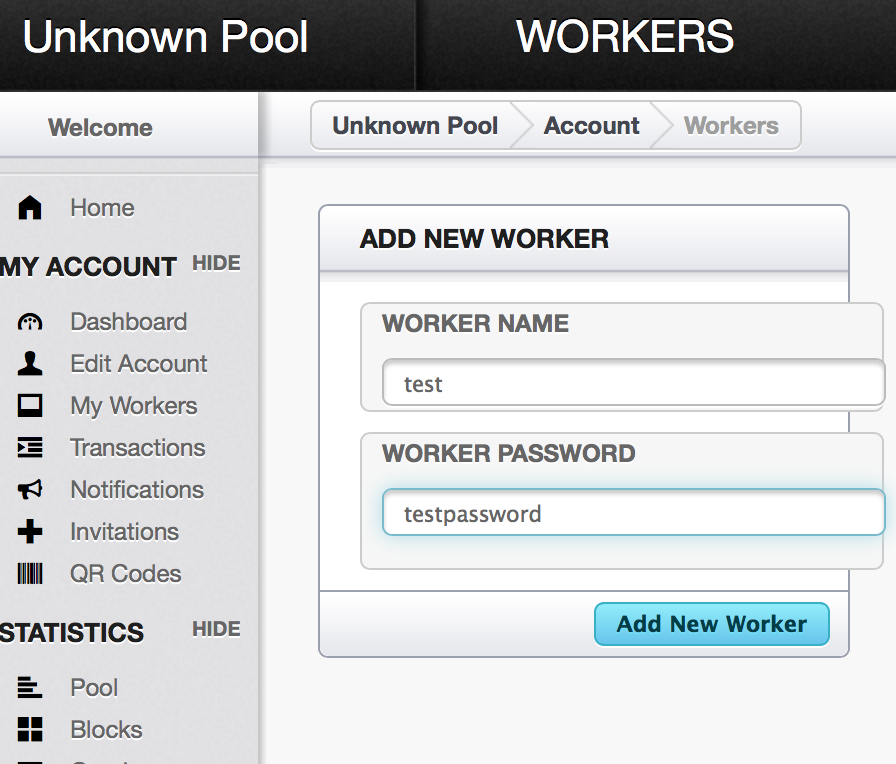
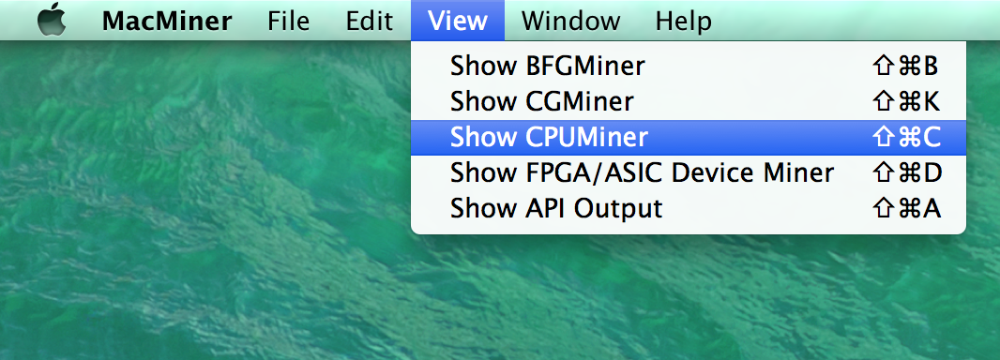
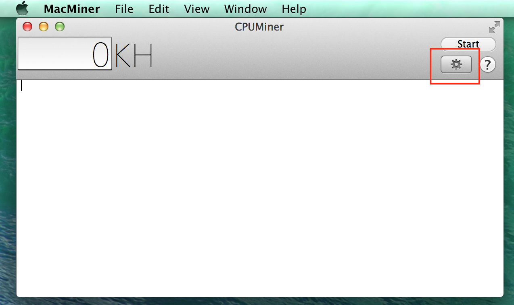
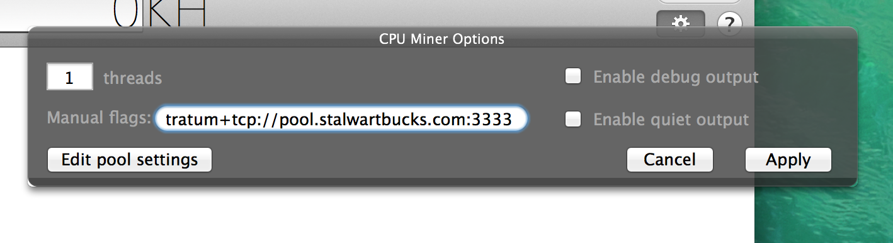
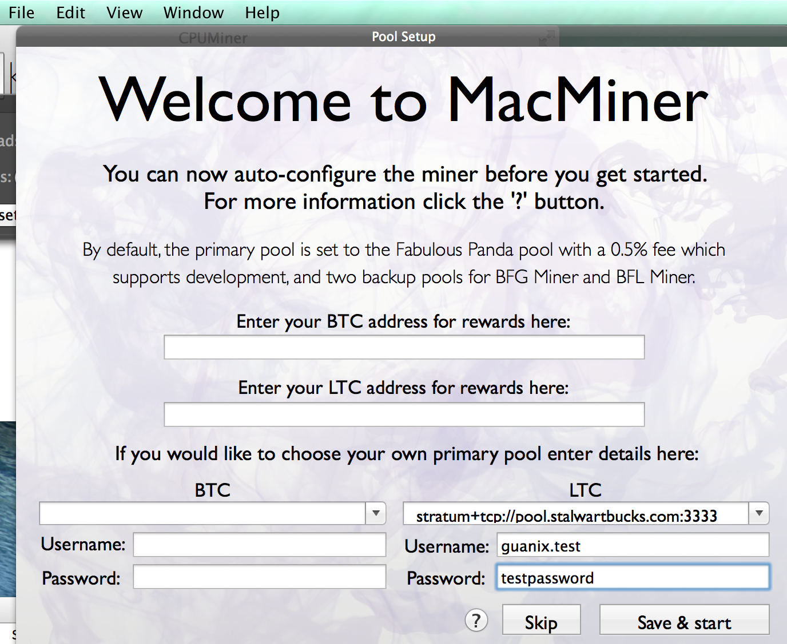
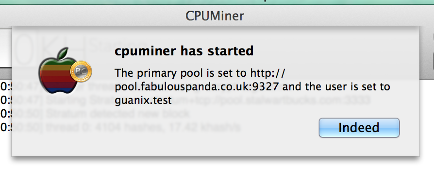
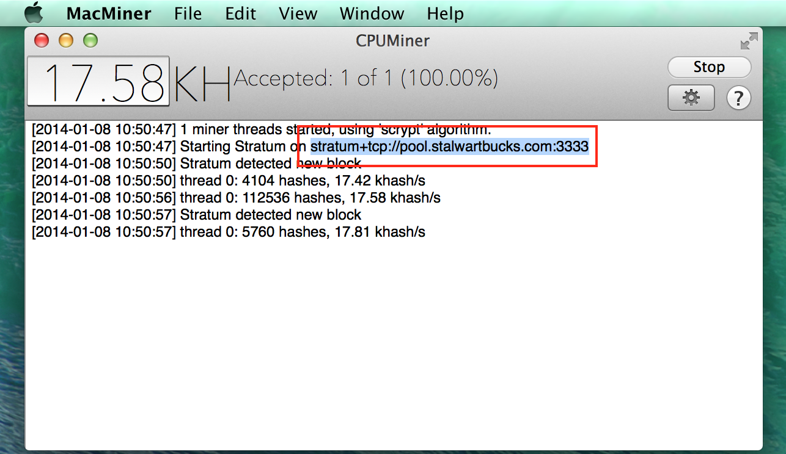

It has already become difficult to solo mine SBX using a CPU. We have set up an experimental pool. Hopefully someone with more experience running pools will create alternative pools.
Set up an account and click on the verification email. Then go to “Add Workers” and create a worker. If your username is foo, a worker name could be bar1.
The URL for connecting to the miner is stratum+tcp://pool.stalwartbucks.com:3333. If you use the popular cpuminer, you would invoke it like this:
./minerd --algo scrypt --url stratum+tcp://pool.stalwartbucks.com:3333 --userpass foo.bar1:password
(All in one line.)
MacMiner is graphical interface for a couple of cryptocurrency mining tools, including the fast cpuminer. It works both with Bitcoin and with Litecoin, which uses the same crypto algorithms as Stalwartbucks. Unfortunately it’s very insistent that you mine with their Bitcoin or Litecoin tools. Here’s a way to set it up to mine Stalwartbucks in a pool:

Your mining username will be username.workername. Your mining password is separate from the password used for logging into the pool website.


--url stratum+tcp://pool.stalwartbucks.com:3333This is what it would look like:


Click “Save & start”.

If you quit and relaunch MacMiner in the future, remember to select CPU Miner again from the View menu.
If you download cpuminer and extract the Zip file (your browser may do this automatically), you will find a file called minerd in your Downloads folder.
Launch a Terminal (in Applications → Utilities) and type in the following:
cd ~/Downloads
chmod +x ./minerd
./minerd --algo scrypt --url stratum+tcp://pool.stalwartbucks.com:3333 --userpass foo.bar1:guanrocks
Replace the parts in red. If you only want to mine using one thread, you could add --threads=1.
Here’s how it might look: